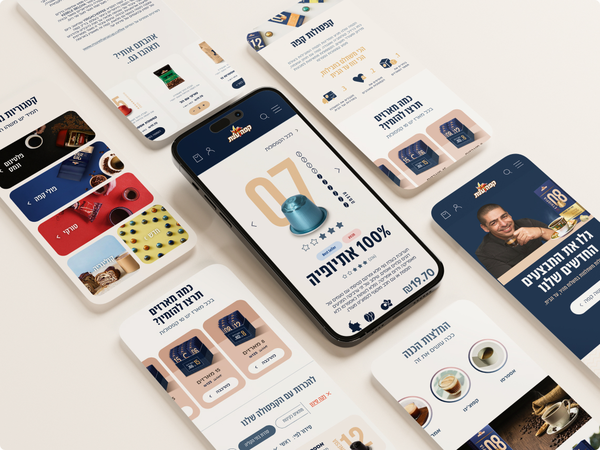
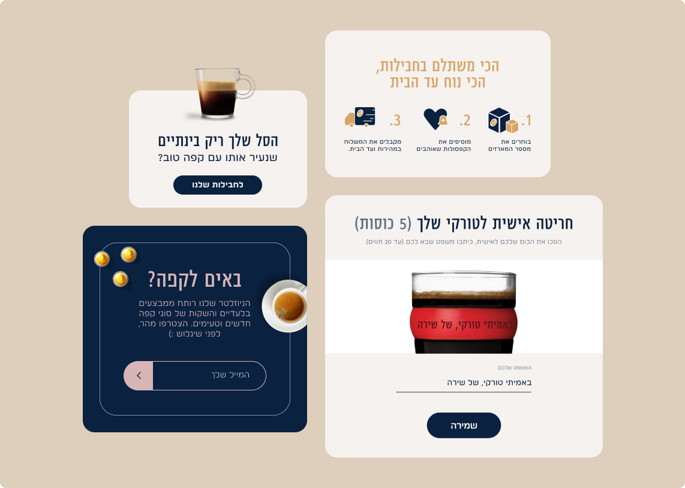
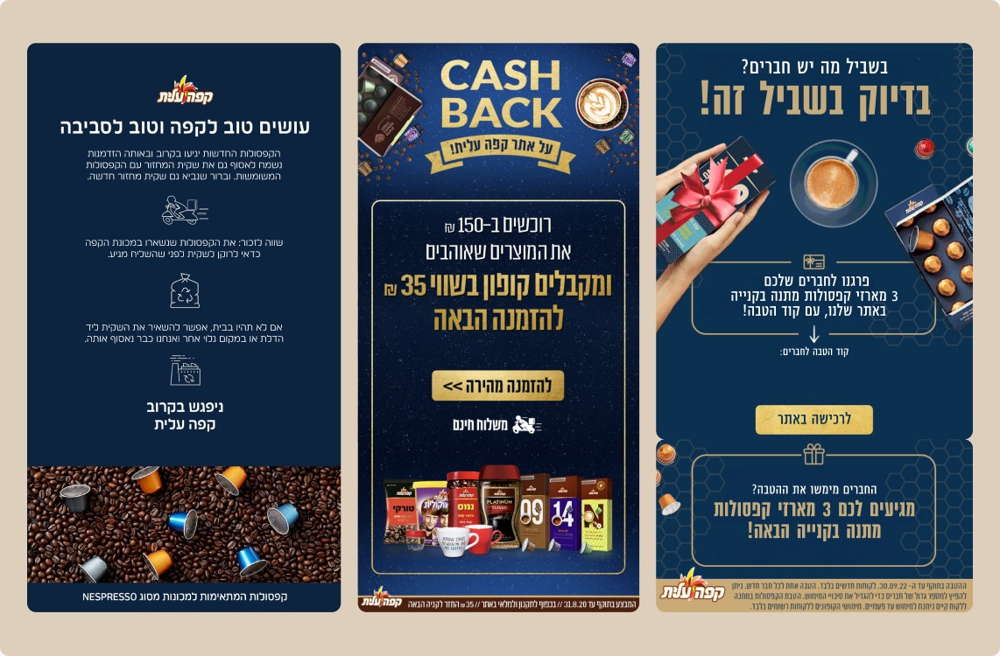
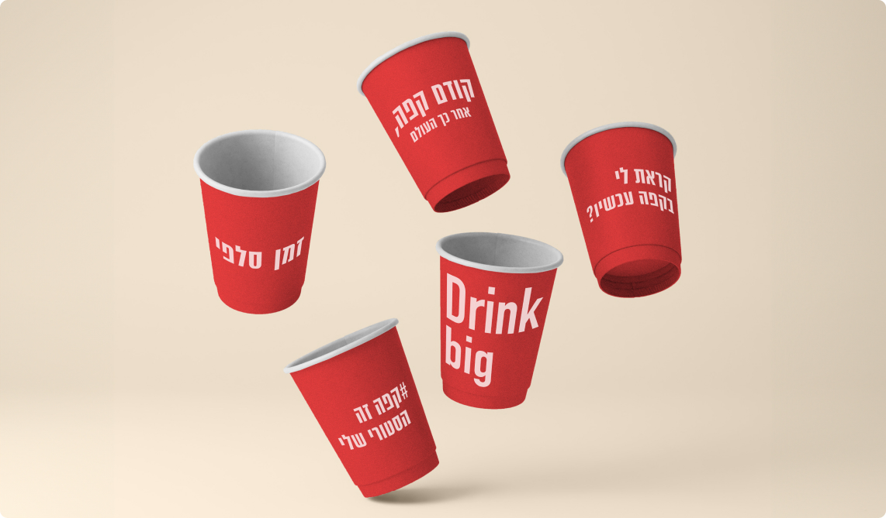

קפה עלית
את הקפה שלהם, הלקוחות של קפה עלית אוהבים בדיוק כמו שהוא. את חוויית הקנייה אונליין, לעומת זאת, אפשר היה לרענן. במסגרת שדרוג האתר, גיבשנו למותג קול דיגיטלי וכתבנו קופי ומיקרוקופי שמקלים על הבחירה והקנייה, נותנים ודאות ומציעים חוויה מהירה, זורמת ואנושית

החלק שלי
הייתי שותף לגיבוש הקול הדיגיטלי של קפה עלית ולכתיבת הקופי והמיקרוקופי לאורך תהליך הקנייה - משמות המארזים ועד לסל ולתשלום. חיפשנו את האיזון בין הנחיות פשוטות שעוזרות להתקדם, לבין רגעים שבהם אפשר להגביר קצת את "האש בגזייה" ולהכניס את אופי המותג והאהבה לקפה


